AirCast
Forecast Air Quality Index.
Forecast the next 5 day's AQI in Gurugram. A SARIMAX model trained on historical time series data
that retrains daily by a Cron job with new data and forecasts next 5 day's Air Quality Index in Gurugram.
Sector 51, Gurugram
Current AQI is ( )
Last Updated:Gurugram - AQI Forecast
Gurugram - Historical Daily AQI
FAQs
The Air Quality Index (AQI) is a numerical scale used to communicate the quality of air in a specific location.
It takes into account various air pollutants, such as
- Particulate matter (PM2.5 and PM10)
- Nitrogen dioxide (NO2)
- Sulfur Dioxide (SO2)
- Carbon Monoxide (CO)
- Ozone (O3)
- In India, the AQI is measured based on the concentrations of major air pollutants.
- Each pollutant is assigned an individual Air Quality Index
- The overall AQI is determined by the highest index value among them
- The AQI is categorized into different levels, ranging from "Good" to "Severe" indicating the potential health impacts associated with the air quality.
- Limit outdoor activities, especially strenuous ones.
- Use N95 masks to reduce inhalation of pollutants.
- Keep windows and doors closed.
- Plant good quality indoor trees.
- Use air purifiers indoors.
- Stay informed about air quality levels and take necessary precautions.
- The AQI for your area can be checked through various sources, including government websites, mobile apps, and online platforms. Many cities in India have dedicated air quality monitoring stations, and their data is often accessible in real-time.
- However, if you are in Gurugram, you can check the AQI and the next 5 day's forecast at the top of this page.
Government initiatives may include
- Implementing stricter emission standards
- Promoting public transportation
- Encouraging the use of cleaner energy sources
- Imposing regulations on industries contributing to air pollution
- Individuals can contribute by using public transportation.
- Reducing the use of personal vehicles, minimizing the use of fossil fuels, planting trees.
- Participating in community initiatives to raise awareness about air quality issues.
- Central Pollution Control Board (CPCB): https://cpcb.nic.in/
- System of Air Quality and Weather Forecasting and Research (SAFAR): http://safar.tropmet.res.in/
Indoor plants can help improve air quality by absorbing pollutants and releasing oxygen. Here are some indoor plants known for their air-purifying qualities:
- Spider Plant (Chlorophytum comosum): Effective in removing pollutants like formaldehyde and xylene. Easy to care for and adapts well to different conditions.
- Snake Plant (Sansevieria trifasciata): Known for its ability to filter out formaldehyde, benzene, and other pollutants. Requires minimal light and water.
- Peace Lily (Spathiphyllum spp.): Excellent in removing common indoor pollutants, including ammonia and benzene. Adds a touch of elegance to indoor spaces.
- Aloe Vera (Aloe barbadensis miller): Known for its ability to clear formaldehyde and benzene. Requires bright, indirect sunlight.
- Boston Fern (Nephrolepis exaltata): Effective in removing pollutants like formaldehyde and xylene. Thrives in high humidity and indirect light.
- Rubber Plant (Ficus elastica): Removes pollutants such as formaldehyde. Tolerant of low light conditions.
- Areca Palm (Dypsis lutescens): Effective in removing formaldehyde, benzene, and trichloroethylene. Adds a tropical touch to indoor spaces.
- Dracaena (Dracaena spp.): Different varieties (e.g., Dracaena marginata, Dracaena reflexa) are effective in removing pollutants. Adaptable to different light conditions.
- Bamboo Palm (Chamaedorea seifrizii): Excellent in removing benzene and trichloroethylene. Well-suited for indoor environments.
- Golden Pothos (Epipremnum aureum): Known for its air-purifying abilities, particularly in removing formaldehyde. Low-maintenance and can thrive in various light conditions.
AQI Scale
| AQI | Associated Health Impacts |
|---|---|
| 0-50 (Good) | Minimal Impact |
| 51-100 (Satisfactory) | May cause minor breathing discomfort to sensitive people |
| 101-200 (Moderate) | May cause breathing discomfort to people with lung diseases (such as asthma) and discomfort to people with heart diseases, children, and older adults |
| 201-300 (Poor) | May cause breathing discomfort to people on prolonged exposure and discomfort to people with heart disease with short exposure |
| 301-400 (Very Poor) | May cause respiratory illness in people on prolonged exposure. The effect may be more pronounced in people with lung and heart diseases |
| 401-500 (Severe) | May cause respiratory effects even on healthy people and serious health impacts on people with lung/heart diseases. The health impacts may be experienced even during light physical activity |
Calculate AQI now.
Want to calculate AQI? Then, checkout my another project
AQI Calculator - https://AQI-Calculator.onrender.com

Architecture & more...
AirCast
- The Story:
- After completing the AQI Calculator project in May 2023, an idea sprouted in my brain - "We have the advantage of live data, can we make use of it and re-train the model every day to forecast AQI?"
- Then, I started learning about Time Series forecasting & started this project.
- Here, it is reverse engineering - I got the idea first, then I learned the required skills & then did the project.
- Input & Output: Input is the historical daily AQI data & the output is the next 5 days AQI forecast.
- Algorithm: SARIMAX (1, 0, 1), (1, 0, 1, 7)
- Data collected from: CPCB
- Dataset type & frequency: Daily Time Series data
- Dataset size: 1369 rows x 10 columns (2020-03-05 to 2023-11-23)
- Model metrics:
- Mean Absolute Percentage Error (MAPE): 13.14
- Mean Absolute Error (MAE): 36
- Note: These are not the daily Cron job metrics, but at the time of training for the first time on the historical data. Cron job metrics are reported to the logs folder in GitHub.
- Timelines: November 2023 - January 2024
- Tech stack: Python, Time Series Analysis & Forecasting Algorithms, Flask, Pandas, Matplotlib, Seaborn, GitHub Actions
- Future ideas:
- Extend AQI forecasting to other major cities in India
- Connect to a Database for storing the AQI data of many cities
